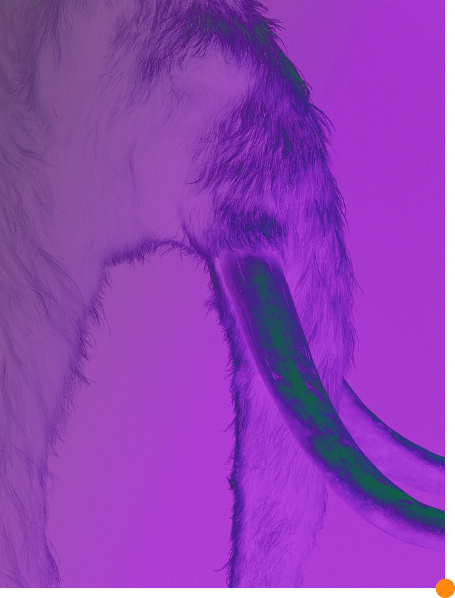

De-extinction (also known as resurrection biology, or species revivalism) is the process of generating an organism that either resembles or is an extinct organism. There are several ways to carry out the process of de-extinction. Cloning is the most widely proposed method, although genome editing and selective breeding have also been considered. Similar techniques have been applied to certain endangered species, in hopes to boost their genetic diversity. The only method of the three that would provide an animal with the same genetic identity is cloning. There are benefits and drawbacks to the process of de-extinction ranging from technological advancements to ethical issues.

Cloning
Cloning is a commonly suggested method for the potential restoration of an extinct species. It can be done by extracting the nucleus from a preserved cell from the extinct species and swapping it into an egg, without a nucleus, of that species' nearest living relative. The egg can then be inserted into a host from the extinct species' nearest living relative. This method can only be used when a preserved cell is available, meaning it would be most feasible for recently extinct species. Cloning has been used by scientists since the 1950s. One of the most well known clones is Dolly the sheep. Dolly was born in the mid-1990s and lived normally until the abrupt midlife onset of health complications resembling premature aging, that led to her death. Other known cloned animal species include domestic cats, dogs, pigs, and horses.
Genome editing
Genome editing has been rapidly advancing with the help of the
CRISPR/Cas systems, particularly CRISPR/Cas9. The CRISPR/Cas9 system
was originally discovered as part of the bacterial immune system.
Viral DNA that was injected into the bacterium became incorporated
into the bacterial chromosome at specific regions. These regions are
called clustered regularly interspaced short palindromic repeats,
otherwise known as CRISPR. Since the viral DNA is within the
chromosome, it gets transcribed into RNA. Once this occurs, the Cas9
binds to the RNA. Cas9 can recognize the foreign insert and cleaves
it. This discovery was very crucial because the Cas protein can now be
viewed as a scissor in the genome editing process.
By using
cells from a closely related species to the extinct species, genome
editing can play a role in the de-extinction process. Germ cells may
be edited directly, so that the egg and sperm produced by the extant
parent species will produce offspring of the extinct species, or
somatic cells may be edited and transferred via somatic cell nuclear
transfer. The result is an animal which is not completely the extinct
species, but rather a hybrid of the extinct species and the closely
related, non-extinct species. Because it is possible to sequence and
assemble the genome of extinct organisms from highly degraded tissues,
this technique enables scientists to pursue de-extinction in a wider
array of species, including those for which no well-preserved remains
exist. However, the more degraded and old the tissue from the extinct
species is, the more fragmented the resulting DNA will be, making
genome assembly more challenging.
Back-breeding
Back breeding is a form of selective breeding. As opposed to breeding animals for a trait to advance the species in selective breeding, back breeding involves breeding animals for an ancestral characteristic that may not be seen throughout the species as frequently. This method can recreate the traits of an extinct species, but the genome will differ from the original species. Back breeding, however, is contingent on the ancestral trait of the species still being in the population in any frequency. Back breeding is also a form of artificial selection by the deliberate selective breeding of domestic animals, in an attempt to achieve an animal breed with a phenotype that resembles a wild type ancestor, usually one that has gone extinct.